POSTS
요새 한국걱정에 밤에 잠이 안온다.
우연히 10년전 그사건을 재구성한 글을 발견하고 무단으로 퍼온다.
http://www.seoprise.com/board/view_nw.php?uid=173411&table=seoprise_11&start=440
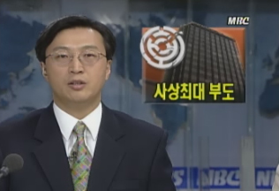
1997년 1월 23일 재계 자산순위 14위 규모의 대기업 ‘한보철강’이 자금난에 부도 처리된다.
한보철강의 부도로 계열사는 물론이고 수천 개에 이르는 하청업체와 거래업체,
또 한보에 돈을 빌려준 금융기관들까지 극심한 자금난에 시달리며 부도 위기에 몰린다.
대한민국 외한위기 사태에 첫 신호탄인 셈이었다.
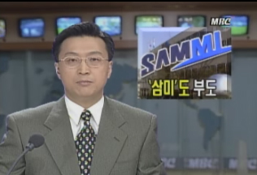
3월 18일, 재계의 26위인 삼미그룹이 자금난을 견디지 못하고 쓰러진다.
철강 경기가 좋았던 때는 12개 계열사를 거느리며 재계 17위까지 올랐던 그룹이었다.
삼미그룹의 부도로 100여개나 되는 삼미특수강 하청업체도 연쇄 도산할 위기에 놓였다.
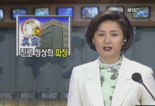
4월 21일, 자금난을 겪던 진로그룹의 부도를 막기 위해 정부는 급히 부실기업정상화 대책을 내린다.
하지만 부실기업정상화 대책이 급박하게 추진되면서 제2 금융권 등 자금시장에 심각한 부작용을 낳는다.
진로 문제에 정부가 강력하게 개입하며 부도를 막겠다는 방안이었지만
이로 인해 다른 기업의 부도는 되려 앞 당겨지고 말았다.
이후 5월 대농그룹, 6월 한신공영 등 굴지의 기업이 줄줄이 부도처리되며 무너진다.
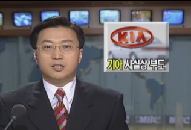
7월 15일 재계 서열 8위인 기아그룹이 부도 방지 협약 대상으로 지정되며 사실상 부도 처리된다.
10대 재벌도 안심할 수 없다는 항간의 얘기가 현실로 드러나 충격은 더했고
기아의 5천개가 넘는 협력 업체또한 비상에 걸려 기아의 부도는 한국 경제에 큰 파장을 일으킨다.
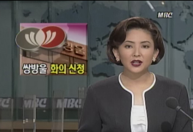
부도 발표까지 했다가 가까스로 부도를 면했던 쌍방울 그룹이
10월 15일, 결국 자금난을 이겨내지 못하고 법원에 화의 신청을 냈고 다음 날 최종 부도처리 된다.
쌍방울과 함께 태일정밀 그룹 또한 10월 16일 부도를 맞는다.
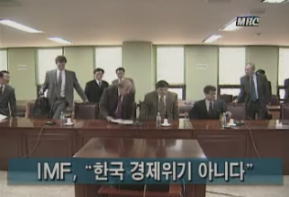
열흘 동안 한국을 방문해서 한국 경제에 대한 평가를 끝낸 국제통화기금 IMF 조사단은
한국은 장기적인 구조 조정과정에서 어려움을 겪고 있으나 위기 상황은 아니라고 본다며
한국은 경제위기라고 하기 어렵다는 발표를 한다.
하지만 10월 24일 미국 S&P사는 한국 국가신용등급을
장기 AA- → A+, 단기 : A1+ → A1로 하향조정한다.
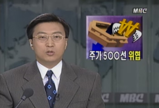
연이어 주식값이 폭락하고 환율이 솟구치는 상황이 발생되고
10월 27일, 1달러에 940원을 넘어서는 모습까지 연출되며 주가 500선 붕괴가 우려되는 사태가 빚어진다.
미국 무디스사 역시 한국 국가신용등급을 장기 : A1 → A2, 단기 : P1 → P2로 하향 조정한다.
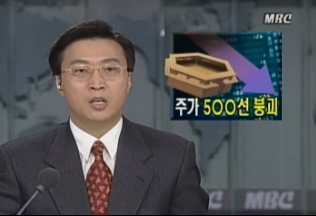
10월 28일, 결국 하루만에 종합주가지수 500선 마저 무너지며 증시 붕괴의 위기감은 고조된다.
하락지수는 35.19포인트로 사상 최고를 기록했고 하락폭 6.63%도 사상 최대치였다.
미국 투자기관 모건스탠리는 ‘아시아를 떠나라’ 라는 보고서를 띄웠으며
강경식은 정부에 외환시장개입중단 지시했지만 재판에서는 불인정된다.
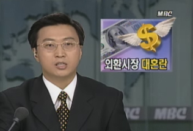
10월 30일, 환율은 1달러에 천원 가까이 치솟았다가 정부의 개입으로 폭등세가 주춤해 졌고,
주가는 다시 폭락해서 외환시장과 증시는 사실상 마비 상태에 빠져 버린다.
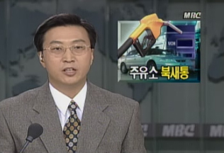
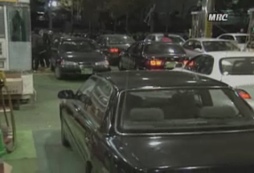
10월 31일, 환율의 급등으로 11월 1일부터 유가가 인상된다는 소식에
기름을 넣기 위해 주유소로 사람들이 몰려와 북새통을 이루는 진풍경이 벌어진다.
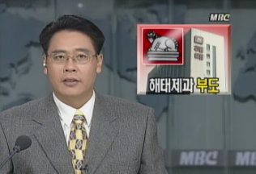
11월 1일 해태그룹이 끝내 부도처리 된다. 당시 재계 순위 24위었던 해태그룹은
30대 그룹 가운데 5번째로 부실기업의 나락으로 떨어지게 됐다.
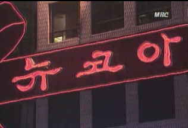
11월 4일 재계 순위 25인 뉴코아 그룹이 화의 신청을 한 데 이어 최종 부도가 났다.
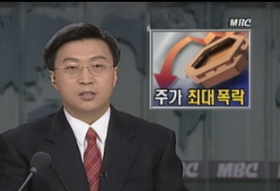
11월 7일 주가가 사상 최대 폭으로 떨어졌고 환율은 다시 급등하며
조금씩 안정세를 보이던 금융 시장이 다시 흔들거리기 시작한다.
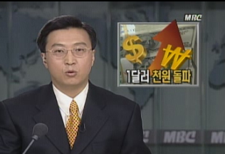
11월 10일 환율이 사상 처음으로 미화 1달러에 천원을 넘어선다.
물가는 오르고, 또 외채를 갚아야 하는 기업의 부담은 그만큼 커지게 돼 가계와 기업 모두 먹구름이 낀다.
당시 김영삼은 전 부총리 홍재형의 다급한 전화를 받고, 그제서야 사태의 심각성을 느꼈다고 한다.
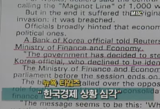
11월 17일 외국언론은 한국 IMF구제금융 요청 가능성 시사하였고
프랑스 경제 전문지 레 제코는 IMF가 한국에 400-600억달러 긴급 지원을 검토하였다고 보도하였지만
이때까지만하더라도 재정경제원은 ‘사실무근’이라며 뻔뻔하게 부인하는 태도를 보인다.
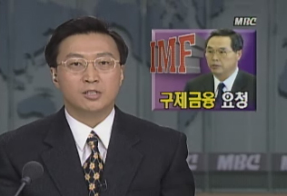
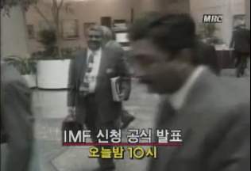
11월 21일 정부는 결국 국제 통화기금 IMF의 구제 금융을 신청하며
경제 우등생 한국의 신화를 뒤로 한 채 사실상의 국가 부도를 인정한다.
외환 위기가 한창이었던 11월 초 외환 보유고에 아무런 문제가 없다고 강경식 부총리가
신경질적인 반응을 보인지 열흘도 안돼서 IMF의 구제 금융을 요청한 것이다.
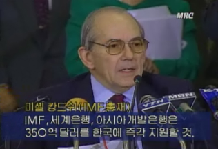
12월 3일 국제통화기금 IMF의 긴급 자금지원을 위한 협상이 최종 타결된다.
IMF로 부터 550억 달러를 지원받게 됐지만 이후 한국 경제는 사실상 IMF의 법정관리에 들어가게 됐다.
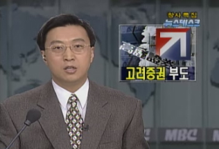
금융기관으로서는 처음으로 고려증권이 12월 5일 최종 부도처리 된다.
직접적인 원인은 IMF 체제에 따라 위기를 느낀 거래 은행들이 자금 제공을 기피하여
어음 2,700여억 원을 막지 못해 끝내 쓰러진 것이다.
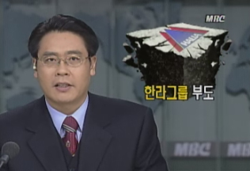
12월 6일, 고려증권에 이어서 재계 12위인 한라그룹이 부도를 낸다.
한라그룹의 부도로 현대를 비롯한 거래 업체들의 적지 않은 피해를 입었고,
국내 자동차 업체들의 생산 차질이 생겼다.
1997년 한해 동안엔 무려 하루 평균 40개 기업이 쓰러졌다.
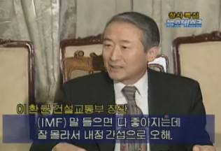
정부는 협상 과정서 하나를 양보하면 IMF는 또다른 조건을 내세워서 항복을 요구했고,
결국 IMF기관에 이것 저것 다 내주고 말았다는 논란에 휩싸인다.
IMF에 도움을 받는 것은 불가피했지만 IMF의 요구에 너무 많은 것을 내준 게 아니냐는 우려에
당시 건설교통부 장관은 국민들이 뭘 몰라서 내정간섭으로 오해한다는 발언을해 논란이 된다.
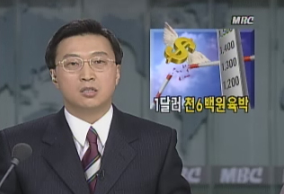
12월 10일 1달러에 1600원까지 환율이 치솟으며 연초 800원대에 비해 2배로 오른다.
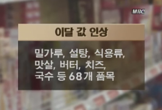
환율이 연일 사상 최고치로 기록하면서 생필품 68품목까지 따라서 치솟았고
서민들의 생활고는 갈수록 심해졌다.
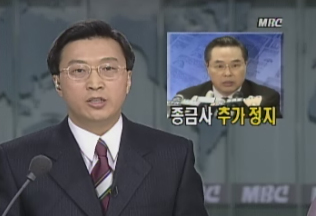
정부는 부도 위기에 몰린 5개 종합 금융사
나라, 대한, 신한, 중앙, 한화 총 5개 종금사 업무정지명령을 내린다.
이대로 뒀다간 기업과 다른 은행들까지 함께 쓰러질지 모른다는 우려때문이었다.
미국 무디스사 한국국가신용등급을 장기 : A3 → Baa2(준 Junk),
단기 : P-3 → N∙P(투자부적격)로 하양조정한다.
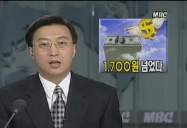
12월 11일 환율은 1달러에 1719원까지 치솟았고
나흘 연속 제한폭까지 오르며 외환시장은 마비돼 버린다.
국제통화기금 IMF의 자금지원에도 불구하고 외국 금융기관은 외화 빚을 찾아가고 있고,
외국 투자자들도 여전히 대한민국을 외면하고 있는 상태였다.
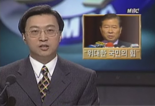
1997년 12월 18일 제15대 대통령 당선 선거서 김대중 후보가 당선된다.
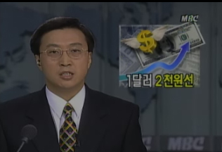
12월 23일 사상 처음 1달러가 2천원선으로 폭등한다.
갚아야 할 외채만 2,000억 달러였으며 외화가 절대적으로 모자란 상태서
한국의 국가 신용등급은 자꾸만 떨어져 외화 차입이 어려운 상황이었다.
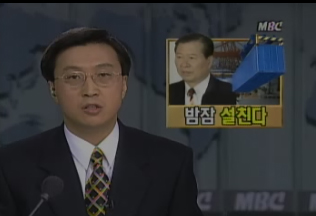
당시 김대중 당선자는 우리 경제의 실상은 생각했던 것보다 훨씬 더 심각해 막다른 골목에 서있다며
자신의 모든 걸 걸고 외환위기를 극복해내겠다는 의지를 밝힌다.
2000년 12월 10일, 민주주의와 인권신장을 위한 노력과
한반도의 평화와 화해를 증진시킨 공로로 새천년 첫 번 째 노벨평화상으로 지목된 김대중 대통령은
노벨평화상 자리서, 국제통화기금은 모두 차관를 상환하고,
우리나라가 IMF 위기에서 완전히 벗어났다고 공식 발표한다.
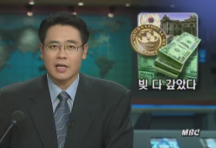
그리고 2001년 8월 23일, IMF로부터 빌린 195억달러를 모두 갚으며
불과 3년 8개월만에 외환위기사태, 즉 IMF사태가 공식 종료된다.
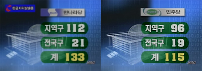
하지만 총선에선 또 한나라당을 찍는 .. 정말 뭐 같은 상황.
한나라당은 지역구 112석에 전국구 21석을 더해 모두 133석의 의석을 확보.
민주당은 지역구에서 96석과 전국구 19석을 얻어 115석의 원내의석 확보.- _-
결국.. 우리 국민은 학습효과가 제로라는 것..